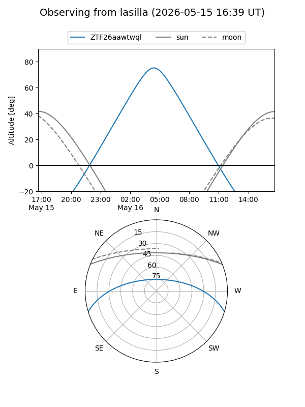
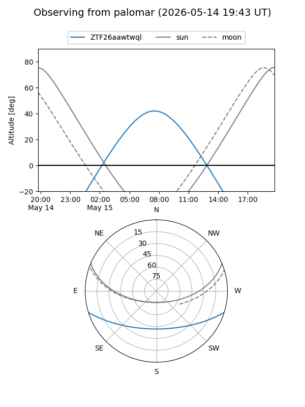

ZTF26aawtwql
Target ZTF26aawtwql at 2026-05-15 09:59
Aliases and brokers:
FINK: link
Lasair: link
ALeRCE: link
alt names
ZTF26aawtwql (ztf,fink_ztf)
Coordinates:
equatorial (ra, dec) = 228.8765,-14.50353
equatorial (HMS+DMS) = 15:15:30.35,-14:30:12.69
galactic (l, b) = (347.4001,+35.64233)
Flags:
Photometry:
last ztfg=19.05
1 ztfg detections
Lightcurve
Visibility


Additional plots